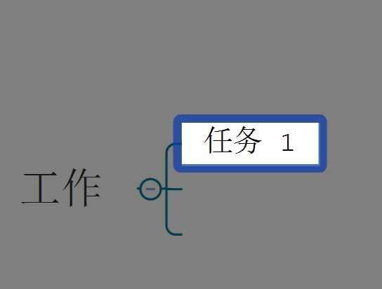
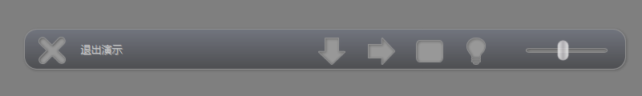
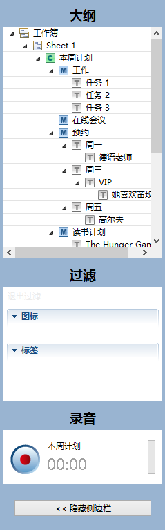

演示
在XMind的演示模式中，当前思维图会以全屏的形式展现在您的电脑屏幕上。同时，只有被选中的主题才会在屏幕中央高亮显示出来。您可以使用快捷键来完成全部的操作，如查看、浏览、编辑等等。
您有三种方式进入演示模式:
- 在菜单栏点击“视图 - 进入演示模式”；
- 使用快捷键“F5”；
- 若您使用Windows，您可使用命令行: "xmind -p xxx.xmind"。
- 使用“Enter”和“Tab”；
- Enter键能够让您依次浏览同级主题；
- Tab键能够让您逐级浏览主题。
- 使用方向键:
- 使用上下键浏览浏览同级主题；
- 使用左右键浏览子主题或者父主题。
- 使用空格键: 空格键可以让我们逐个浏览所有主题。
- 使用大纲:
- 通过底部的按钮条打开侧边栏；
- 在大纲视图中选择您希望展示的主题；
- 被选中的主题会高亮显示在屏幕的中央。
注意:
- 所有被选中的主题都会被高亮显示在屏幕的中央；
- 如果当前选中的是中心主题，前述的快捷键会有些不同的用法:
- Enter: 若思维图中有自由主题，移动到自由主题；
- 空格: 移动到第一个分支主题；
- 上下键: 移动到分之主题。
- 移动鼠标到屏幕底部；
- 会出现有6个按钮的工具栏面板。
- 退出: 点击退出演示状态。
- 下一个: 点击查看下一个同级主题。
- 深入: 点击查看子主题。
- 侧边栏: 点击打开侧边栏。
- 亮度调节: 点击显示全图。
- 缩放: 拖拽缩放思维图。

侧边栏的使用:- 通过工具栏面板打开侧边栏；
- 侧边栏分为三个部分:

退出演示模式:- 直接按“Esc”；
- 点击工具栏面板上的“退出”按钮。